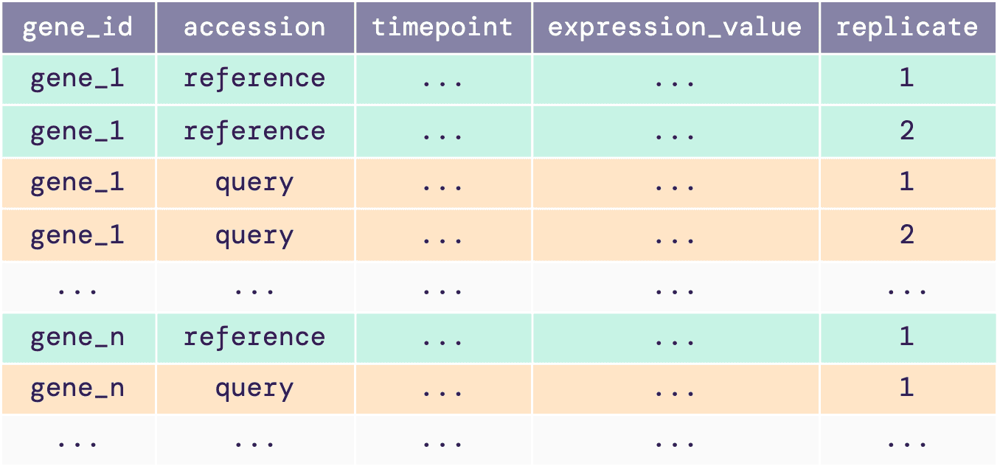
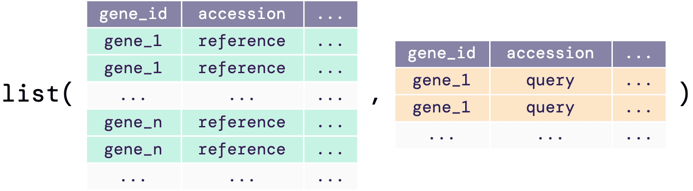
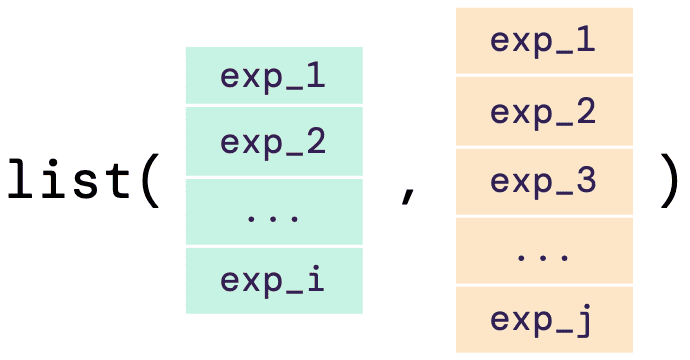

The input data required for greatR can be either a data
frame, a list of data frames, or a list of vectors, as shown below:

A single data frame input
The single data frame input or the data frame in the list must
contain gene expression time-course data with all replicates. The
illustrative diagram below shows the required structure of the
input.

This data frame must contain reference and query expression data, and the following five columns:
-
gene_id: locus name or unique ID of each gene. -
accession: accession or name of the reference and query data. -
timepoint: time points of the gene expression data. -
expression_value: desired expression values or measure of the abundance of gene or transcripts. This value can be RPM, RPKM, FPKM, TPM, TMM, or raw read counts. -
replicate: biological replicate ID for an expression value at a particular time point.
The example below shows how the input data should look
like:
| gene_id | accession | timepoint | expression_value | replicate |
|---|---|---|---|---|
| BRAA02G018970.3C | Ro18 | 11 | 0.3968734 | Ro18-11-a |
| BRAA02G018970.3C | Ro18 | 11 | 1.4147711 | Ro18-11-b |
| BRAA02G018970.3C | Col0 | 7 | 0.4667855 | Col0-07-a |
| BRAA02G018970.3C | Col0 | 7 | 0.0741901 | Col0-07-b |
A list of data frames as an input
If users do not have the data reference and query joined with the IDs mapped into one single data frame, there is an option of having the input data of a list of data frames. As shown in the illustrative diagram below, the list must contain both reference and query data frames with the columns as required in the single data frame input (see previous section).

The example below shows how the input list of data
frames should look like:
# Load data frames from the sample data
brapa_ref_data <- system.file("extdata/brapa_SOC1_data.csv", package = "greatR") |>
data.table::fread()
ara_query_data <- system.file("extdata/arabidopsis_SOC1_data.csv", package = "greatR") |>
data.table::fread()
list_df <- list(
reference = brapa_ref_data,
query = ara_query_data
)
list_df
#> $reference
#> gene_id accession timepoint expression_value replicate
#> <char> <char> <int> <num> <char>
#> 1: BRAA03G023790.3C Ro18 11 1.984367 ERR_ro18_rna_seq_v3_R18A1_1
#> 2: BRAA03G023790.3C Ro18 11 1.474974 ERR_ro18_rna_seq_v3_R18A1_2
#> 3: BRAA03G023790.3C Ro18 11 2.194917 ERR_ro18_rna_seq_v3_R18A1_3
#> 4: BRAA03G023790.3C Ro18 29 113.797721 ERR_ro18_rna_seq_v3_R18A10_1
#> 5: BRAA03G023790.3C Ro18 29 94.650207 ERR_ro18_rna_seq_v3_R18A10_2
#> 6: BRAA03G023790.3C Ro18 29 129.176178 ERR_ro18_rna_seq_v3_R18A10_3
#>
#> $query
#> gene_id accession timepoint expression_value replicate
#> <char> <char> <int> <num> <char>
#> 1: AT2G45660 Col0 15 76.95936 ERR_ds_klepikova_SRR1688425
#> 2: AT2G45660 Col0 14 81.96151 ERR_ds_klepikova_SRR1688328
#> 3: AT2G45660 Col0 16 59.24077 ERR_ds_klepikova_SRR1688427
#> 4: AT2G45660 Col0 15 68.85581 ERR_ds_klepikova_SRR1688426
#> 5: AT2G45660 Col0 12 64.21780 ERR_ds_klepikova_SRR2106520
#> 6: AT2G45660 Col0 10 72.98476 ERR_ds_klepikova_SRR1661475Note here that the elements of the list must be named reference and query, the order of the element will not effect the registration process.
A list of vectors as an input
As an alternative of a list of data frame as input data, as shown above, users can also have a list of numerical vectors as their input. The illustrative diagram below shows how the input should look like:

The example below shows how the input list of vectors
can be defined as an input:
# Define expression value vectors
ref_expressions <- c(1.9, 3.1, 7.8, 31.6, 33.7, 31.5, 131.4, 107.5, 116.7, 112.5, 109.7, 57.4, 50.9)
query_expressions <- c(14, 12.1, 15.9, 47, 30.9, 50.5, 80.1, 67.4, 72.9, 61.7)
list_vector <- list(
reference = ref_expressions,
query = query_expressions
)
list_vector
#> $reference
#> [1] 1.9 3.1 7.8 31.6 33.7 31.5 131.4 107.5 116.7 112.5 109.7 57.4 50.9
#>
#> $query
#> [1] 14.0 12.1 15.9 47.0 30.9 50.5 80.1 67.4 72.9 61.7Note that since there is no ID specified on the vectors,
greatR will assign a unique ID for the reference and query
pair data (see more in the register
data > Using other inputs article).